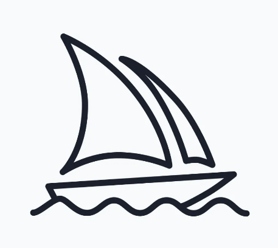

GPT-3.5 mimarisine dayalı bir dil modeline sahiptir. OpenAI tarafından eğitilmiştir ve bilgi kesim tarihim 2022'dir.
DeepL
DeepL
DeepL, çeviri alanında kullanılan bir yapay zeka çeviri motorudur ve derin öğrenme tekniklerini kullanarak yüksek kaliteli çeviri hizmetleri sunar.
Midjourney

Midjourney
Midjourney, bağımsız bir araştırma laboratuvarı tarafından geliştirilmiş olan ve metinleri resimlere dönüştüren yapay zeka (AI) hizmetidir
Bard
bard
Büyük bir dil modeli olan Bard, insan benzeri metinleri üretme, dilleri çevirme, farklı türde yaratıcı içerikler yazma ve sorularınızı bilgilendirici bir şekilde yanıtlama yeteneğine sahiptir.
Copy.ai
Copy.ai
Copy.ai, pazarlamacılar için çeşitli metin formatları oluşturmak için kullanılabilen bir yapay zeka aracıdır. Bu formatlar arasında e-posta, makale, sosyal medya gönderisi, ürün açıklamaları ve daha fazlası yer alır.
Canva
Canva
Canva, görsel tasarımlar oluşturmak için kullanılan bir çevrimiçi platformdur. Kullanıcılar, bir dizi hazır şablon ve araç kullanarak kendi grafiklerini, sunumlarını, afişlerini ve daha fazlasını oluşturabilir.
Alexa
Alexa
Alexa, sesli komutlarla etkileşim kurulabilen bir yapay zeka asistanıdır. Kullanıcılar, Alexa'yı müzik çalmak, haberleri dinlemek, hava durumunu kontrol etmek ve daha fazlasını yapmak için kullanabilir.
MuseNet
MuseNet
MuseNet, müzik oluşturmak için kullanılan bir yapay zeka sistemidir. Metin, kod veya diğer müzik parçaları gibi çeşitli girdileri kullanarak farklı türde müzik parçaları oluşturabilir.